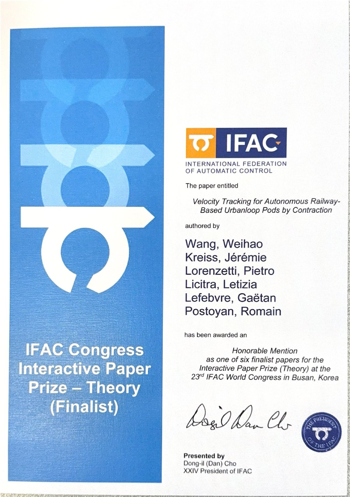

Certificate

Open certificate (PDF)Tap to open and zoom · Original PDF, 7.3 MB
This poster was presented at the IFAC World Congress 2026 in Busan, South Korea.

Open certificate (PDF)Tap to open and zoom · Original PDF, 7.3 MB